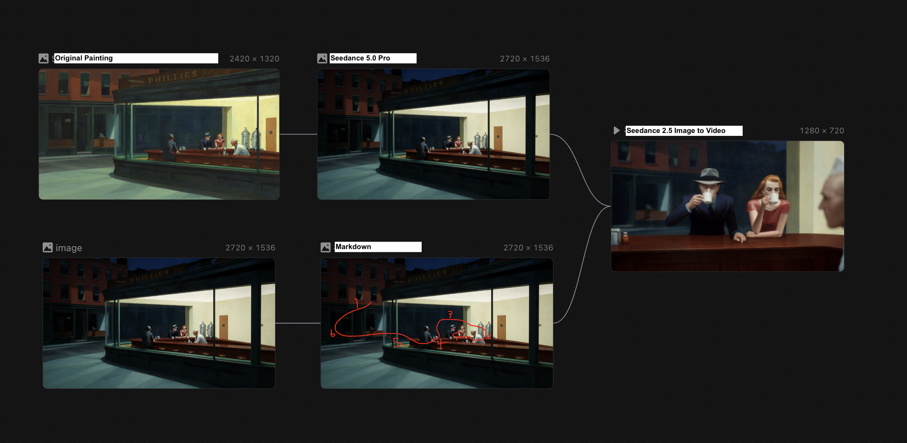

Generative AI & Storytelling
Overview
Over two years of working with generative video, I moved between researcher, prototyper, creator, and facilitator—testing models, building workflows, producing films, and helping others tell stories with them.
I began by researching how generative-video tools fit into creative workflows, then moved from prototyping and model testing into filmmaking and teaching 20+ students.
My work spans text-to-video, image-to-video, API-based generation, editing, sound, pacing, transitions, and narrative direction using Runway, Veo 3, and Replicate.
Impact
Finalist at theMIT AI Filmmaking Hackathonwhere I led the team.
Featured artist at theIEEE ICME Art Galleryin Nantes, France.
Co-authored a generative-video workflow research publication presented atHICSS-58
What started as research into generative-video tools grew into a practice spanning prototyping, filmmaking, teaching, and creative direction.
Research Foundation
At Columbia Computational Design Lab, I worked on the prototyping and creative-workflow side of a generative-video research project.
I tested generative-video models and prompting methods, translating how audiovisual artists think into structures a generative system could understand.
Generating an interesting clip was relatively easy. Giving artists meaningful creative control was much harder.
We stopped asking, “What can this model generate?” and started asking “Where should this model fit into the creative process?”
One workflow I developed focused on how an artist might decide the ending of a music video.
I mapped musical characteristics to visual behaviors that AI could interpret.
From these experiments, I created structured documentation connecting music, visual cues, prompts, and generation parameters—giving creators a framework beyond “just write a prompt.”


The guidance was incorporated into a web prototype where creators could enter adjectives, keywords, and creative intentions to generate audiovisual outputs.
Making AI useful for creatives means translating creative knowledge into structures the technology can understand—while keeping meaningful creative decisions in the artist’s hands.
Creative Practice
Generating individual clips was often fast. Making them feel like they belonged together was harder.
The challenge was creating visual continuity across separate generations.
I used two main strategies:
Start from a consistent first frame
For related shots, I generated images in the same visual style, then used those frames as the starting point for video generation. This gave the model a more consistent visual anchor across scenes.
Build continuity in the edit
I also used music, pacing, transitions, recurring imagery, shot order, and opening/ending structure to connect separate generations into one sequence.
Consistency came from both controlling the generation and directing what happened between generations.
Choosing the right model for the shot
Different models were better at different things: motion, image consistency, controllability, or API access.
Selected Work
Flying Into Edward Hopper’s Nighthawks (1942) | AI Art Film
What if you could step inside a painting?
This AI-generated short film takes a cinematic journey through Edward Hopper’s Nighthawks (1942), moving between its glowing diner and the quiet streets outside.
Created with LibTV Seedance using image-to-image 3D reconstruction and image-to-video generation.
Bosch, then and now
Two approaches to moving through Hieronymus Bosch’s painted worlds.
Flying Through Bosch’s Garden of Earthly Delights | AI 3D Art Film
What if you could fly inside Bosch’s surreal world?
This AI-generated short transforms the paradise section of The Garden of Earthly Delights into a continuous 3D landscape, moving through strange architecture, animals, water, and dreamlike terrain while preserving the painting’s original visual language.
An experiment in spatial reconstruction, camera movement, and generative video.
Current workflow
AI Art Story | Journey Through Bosch’s Inferno
An earlier Bosch experiment, shown alongside the new film to trace how my approach to depth, motion, and spatial continuity has evolved over two years.
Earlier workflow
AI Visual Symphonic Poem
This video explores various works by J.M.W. Turner. It connects his turbulent marine paintings, focusing on his famous textures and colors. AI adds motion, but artistic choices are what allow the video to highlight the unique and interesting elements of Turner’s work.
Depart
This project explores how generative AI can be carefully directed to tell a deeply emotional visual narrative. By chaining together text-to-image prompts, image-to-video APIs, and Veo 3, I crafted a surreal visual language to drive the story of two girls breaking free from a massive ship on a red ocean. When a sudden firework prompts one to turn back, the other is left to embark on a solitary, dreamlike journey.
AI Marketing Campaign
Under the guidance of Dr. Emily Spratt, I developed an AI-integrated marketing campaign case study for Bottega Veneta.
The project taught me that AI is most valuable in brand work when it expands creative exploration without weakening the brand’s identity.
Facilitation
For five weeks, I worked as a Teaching Assistant for Columbia’s AI & Storytelling studio, supporting 20+ students developing AI-assisted films.
I gave feedback on visual tone, music, transitions, pacing, shot selection, model choice, and openings + endings.
AI & Storytelling class repository
My role wasn’t only helping students use the tools. It was helping them decide what to do with them.
Making the work myself made me a better facilitator; helping other people solve their stories made me more critical of my own.
Reflection
AI can generate footage quickly. The human work is deciding what deserves to become a story.
Working across research, filmmaking, and teaching made me less interested in finding one perfect model.
What matters most happens between the generations: selecting, rejecting, sequencing, creating continuity, shaping rhythm, and deciding what the audience should feel.
Models will keep changing. The ability to direct, critique, and shape generated material lasts longer.